Junhui Huang
About me
I am currently a Ph.D. candidate at Beijing Institute of Technology,
looking for 2024 Fall Visting PhD position .with external funding (CSC scholarship) for one year.
Research Interests: Robotics, Motion Planning, Data Driven learning approach for robotics.
Publication
BLSTNet: Bone-layer State Recognition for Robot-Assisted Laminectomy(in progress)
FEIT-type feedforward robustness control for robotic manipulator under full-state constraints(in progress)
Educations
 |
Major: Mechanical Engineering in Robotics and Control track
GPA: 87.5/100
Core Courses:
Robot Learning, Deep Learning,
Surgical Robotics, Data Science
|
|
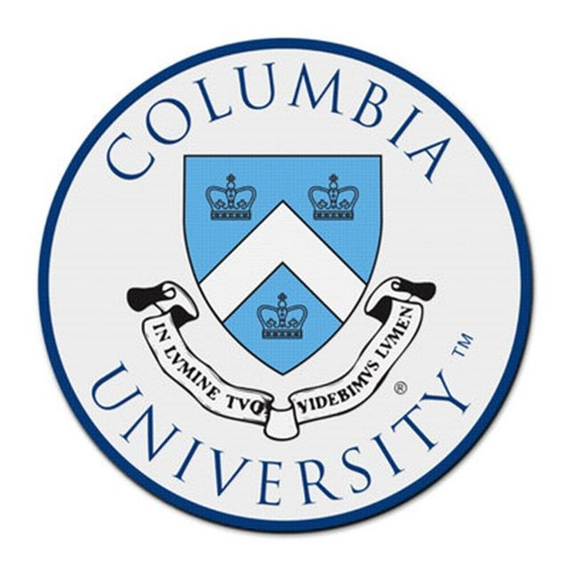 |
Major: Mechanical Engineering in Robotics and Control track
GPA: 3.53/4.0
Core Courses:
Robot Learning, Intro to Robotics,
Computational Aspects of Robotics, Deep Learning,
Artificial Intelligence, Control Theory
|
|
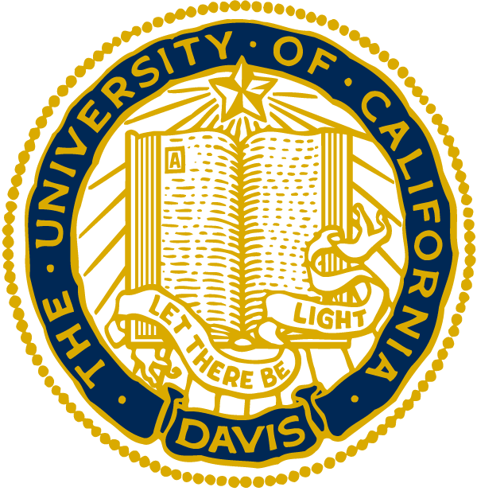 |
Major: Mechanical Engineering in Robotics and Control track
GPA: 3.6/4.0
Core Courses:
Data Structure, Computer Aid Mechatronic Design, Mechatronic System Design
|
|
|
Major: Mechanical Engineering, Manufacturing and Automation
GPA: 86/100
Core Courses:
Matlab, CAD/CAE in manufacture, Mechanical design project.
|
Research Experience
|
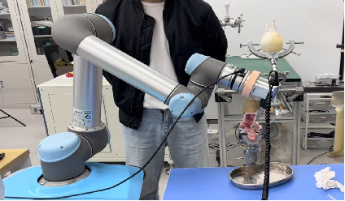
|
Surgical Robot for Laminectomy
A bone layer identification model integrating both force and position information .
Released the first open-source dataset and model library in the field containing 22 different models(ML & DL) .
Achieve the SOTA performance .
|
|
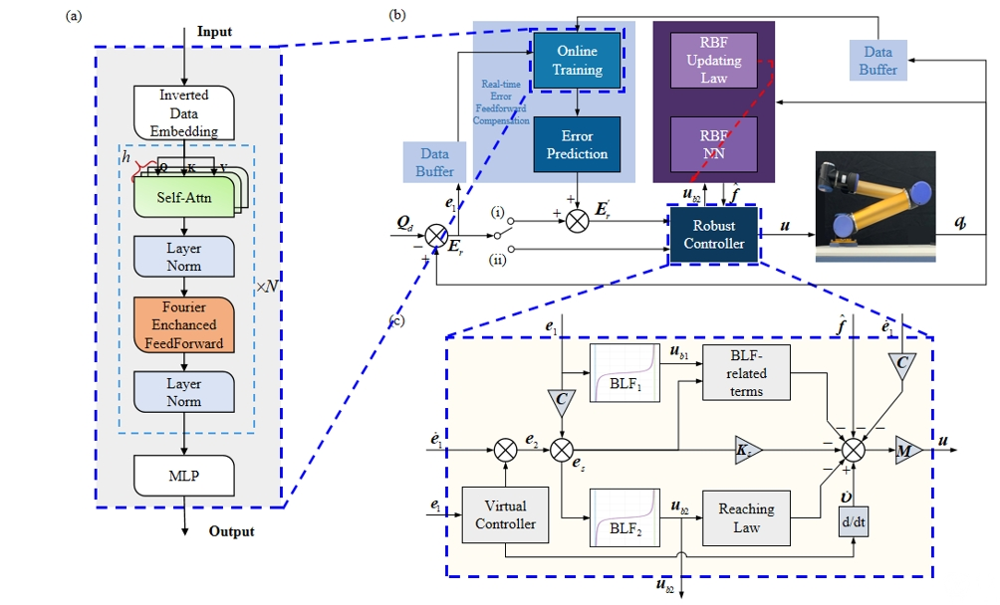
|
Robot Tracking Controll
|
|
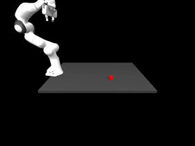
|
Imitation Learning (mainly focus in future)
Conducted data collection and reproduce end-to-end imitation learning algorithm in a simulated environment with single arm
Algorithm transfer will be executed on the Franka panda robot (ongoing) and collect real-world demonstration.
The robotic arm will be integrated onto a quadruped robot platform for collaborative tasks such as opening doors and pressing buttons and picking object.
|
Underwater tunnel inspection robot
Developed remote-control tunnel inspection robot for Yalong River Hydropower Station, National Key R&D Program, as solution to replace regular manual inspection.
Individually responsible for development of control system in master computer, Qt GUI, integrated control of underwater unmanned vehicle, winch, power supply, and various sensors (inertial navigation and sonar)
Applied Master-Slave Control Algorithm(C++) on underwater robotic arm system
|

|
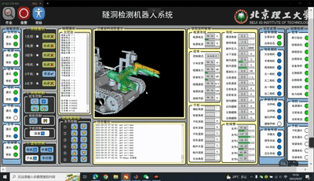
|
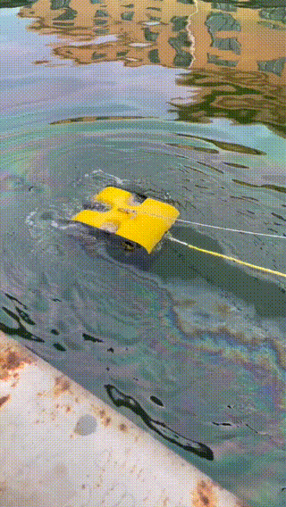
|
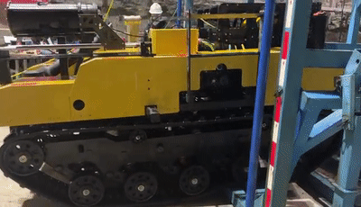
|
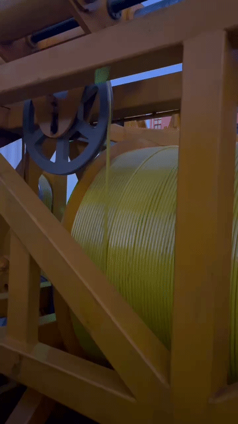
|
Toy Project
|
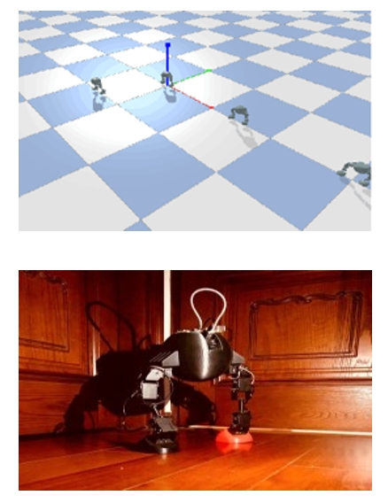
|
Robot Design Project [2021.9 ~ 2021.12]
Understood the basic components and specifications, Made multiple potential sketches.
Designed and refined the model in SolidWorks, including raspberry pi, controller board,
motor and PCB mounts, holes for thermoplastic screw inserts, cables and cable harnesses, covers and fairings.
3D printed and laser cut the parts, assembled them as an entire humanoid robot.
Programmed and tested the robot.
|
|
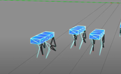
|
Evolutionary Computation
Developed a physics engine based on OpenGL and C++ to simulate realistic
physical scenarios such as gravity, friction, and acceleration.
Designed evolutionary algorithm for robot to
automatically evolve a suitable shape and control mode for rapid movement.
|
|
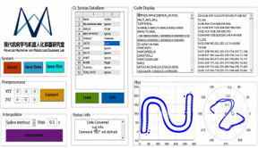
|
High-accuracy Manufacturing
Developed and improved data structure of backend software as optimization of adaptability
for various Machining Path Algorithms
Transformed code generated by Solidworks into G-Code to machine mechanical parts
|
Work Experience
|
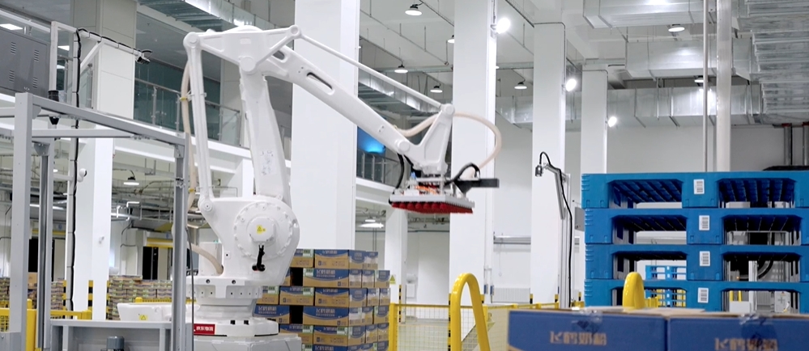
|
-
Developed intelligent depalletizing and palletizing solutions from robotics picking algorithm to landing and
commercialization for FeiHe Automated Logistics Robot Warehouse, one the biggest in China
-
Individually realized robotic kinetics algorithm and developed motion-control module in master computer
(C++) to transform CV info to executable target points for motion planning and picking tasks
-
Productized solutions of robotics picking; developed backend including driver of robot arm control module
in master computer and encapsulation of motion control and sensor control APIs, for unified control of
various robot arms (ABB, UR, FANUC)
-
Constructed a target detection pipeline: annotated dataset and trained the Mask R-CNN instance
segmentation model
-
Collaborated and accomplished concurrency programing in large commercialized project (LOC>100w)
|
Skills